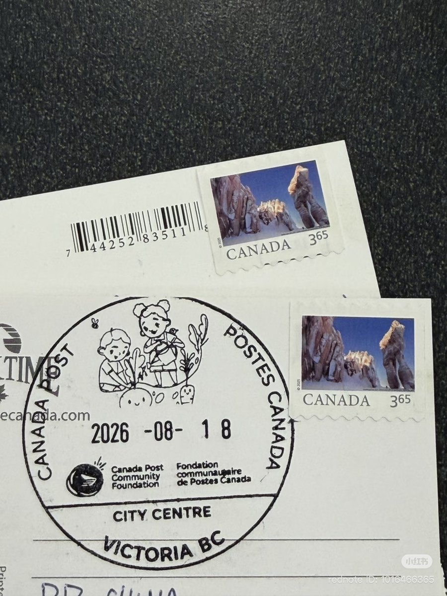

Victoria Main PO pictorial cancel
Canada Community Foundation
- Status
- Active
- Run dates
- ? to present
- Design
- Canada Community Foundation
- Ink colour
- Black
- Designer
- Unknown
- Post office
- Victoria Main PO
1212 Douglas St,
Victoria, BC
V8W 2E5
Collect it by mail. Send your stamped covers, with a stamped return envelope, to the post office address above. How to collect pictorial cancels by mail · en français
 Saanichton STN MainVehicle
Saanichton STN MainVehicle Sooke STN MainFalls
Sooke STN MainFalls Sooke STN MainTrees
Sooke STN MainTrees Cobble Hill POGrapes
Cobble Hill POGrapes Duncan STN MainTotem
Duncan STN MainTotem